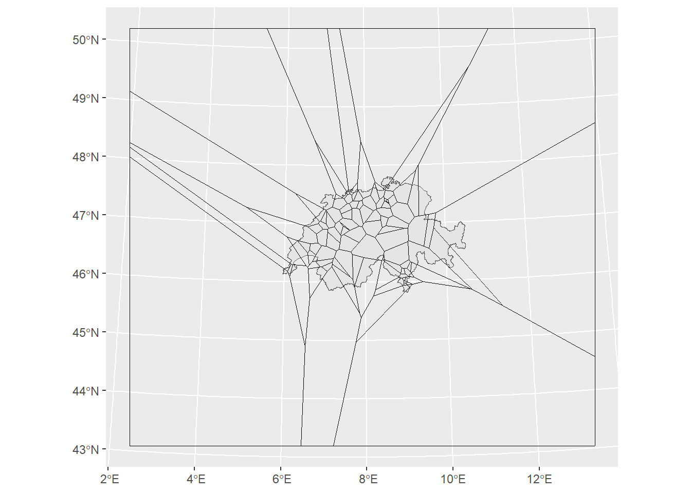

library("sf")
library("dplyr")
library("ggplot2")
library("gstat")SpatAn 3: Exercise B
This exercise is about implementing two different interpolation methods in R. In the first interpolation method we will use inverse distance weighted interpolation. Later, we will use the nearest neighbour method. To do this, you will need the following packages:
You will also need the following datasets:
air_quality <- read_sf("datasets/rauman/luftqualitaet.gpkg")
switzerland <- read_sf("datasets/rauman/schweiz.gpkg")The gstat library offers various options for interpolating data points, including the inverse distance weighted method. Unfortunately, the package is not yet as user-friendly as sf: however, the package is currently being revised and it should be just as easily accessible in the future. So that you do not have to deal with the peculiarities of this library, we have prepared a function that should make it easier for you to use the IDW interpolation.
We have taken away some of the complexity and have provided you with a ready-to-use tool. While we provide a simpler function for ease of use, we also encourage those who can to explore and understand this function in detail, or even better, use the gstat package instead. If you want to work with our function, you have to copy and execute the code below into your script.
my_idw <- function(groundtruth, column, cellsize, nmax = Inf, maxdist = Inf, idp = 2, extent = NULL){
library("gstat")
library("sf")
if(is.null(extent)){
extent <- groundtruth
}
samples <- st_make_grid(extent, cellsize, what = "centers")
my_formula <- formula(paste(column,"~1"))
idw_sf <- gstat::idw(formula = my_formula, groundtruth, newdata = samples, nmin = 1, nmax = nmax, maxdist = maxdist, idp = idp)
idw_matrix <- cbind(as.data.frame(st_coordinates(idw_sf)), pred = st_drop_geometry(idw_sf)[,1])
idw_matrix
}Now you can interpolate the air_quality data set with my_idw()as follows.
my_idw(groundtruth = air_quality, column = "value", cellsize = 10000, extent = switzerland)The following parameters are available:
- Necessary parameters:
groundtruth: point data record with measured values (sfobject)column: name of the column with the measured values (in quotation marks and closing characters)cellsize: cell size of the output raster
- Optional parameters
nmax: maximum number of points to be taken into account for the interpolation. Default:Inf(all values in the given search radius)maxdist: Search radius to be used for interpolation. DefaultInf(all values up tonmax)idp: Inverse Distance Power: the power with which the denominator is to be increased. Default:2. Values are weighted in the reciprocal of the square: \(\frac{1}{dist^{idp}}\).extent: area for which the interpolation is to be carried out. If nothing is specified (defaultZERO), the extension of groundtruthisused.
- Ouput
- the output of the function is a
data.framewith 3 columns:X,Ycoordinates of the interpolated valuespred: the Interpolated Value
- the output of the function is a
The output is a raster-like data type (see Spatial Data Science 1 lecture). We can visualise this with geom_raster() with ggplot. To do this, you must specify the X and Y coordinates in aes, and colour the interpolated value with fill.
Task 1: Spatial interpolation with IDW
Calculates the IDW for the air quality measurements with different parameters and visualise the results in each case. Experiment with nmax and maxdist. What do you find?
Tips:
- You can find out what distances make sense with
maxdistfrom the output of the G function (previous exercise) - At the beginning, choose a slightly conservative (large)
cellsizeand only reduce it if your computer can handle it well - Since the output from the interpolation is in the same coordinate reference system as
schweiz.gpkg, these two data sets can be displayed in the sameggplot. For this, you have to set the aesthetics (aes()) for each layer individually, and not at the level ofggplot().
## [inverse distance weighted interpolation]
## [inverse distance weighted interpolation]
## [inverse distance weighted interpolation]
## [inverse distance weighted interpolation]
Task 2: Interpolation with Nearest Neighbour
Another simple way to interpolate is the creation of a Voronoi diagram, also known as Thiessen polygons or Dirichlet decomposition. sf has a st_voronoi() function, which assumes a point data set and constructs Thiessen polygons around the points. All it takes is a small preprocessing step: sf wants a voronoi diagram for each feature, i.e. for each line in our data set. This makes little sense for us, because each line consists of only one point. Therefore, we must first convert air_quality with st_union() from a POINT to a MULTIPOINT object in which all points are summarised in one line.

st_voronoi() has pulled the Thiessen polygons a little further than we want them. However, this is a nice illustration of the edge effects of Thiessen polygons, which can become very large towards the edge (where it has fewer and fewer points). We can clip the polygons to just Switzerland with st_intersection(). Here, too, two small pre-processing steps are required:
- As before, we have to merge the individual cantonal polygons. We achieve this with
st_union(). We save the output asswitzerland, which as a result returns a single polygon in the shape of the Swiss borders. - For the Thiessen polygons, we do exactly the opposite:
st_voronoi()provides a single feature with all polygons, which has not been clipped. Withst_cast(), theGEOMETRYCOLLECTIONis divided into single polygons.

Now we just need to determine the respective value for each polygon. We achieve this again with st_join(). Here, too, a small preprocessing step is necessary: We convert the sfc object (only geometries) into an sf object (geometries with attribute table).